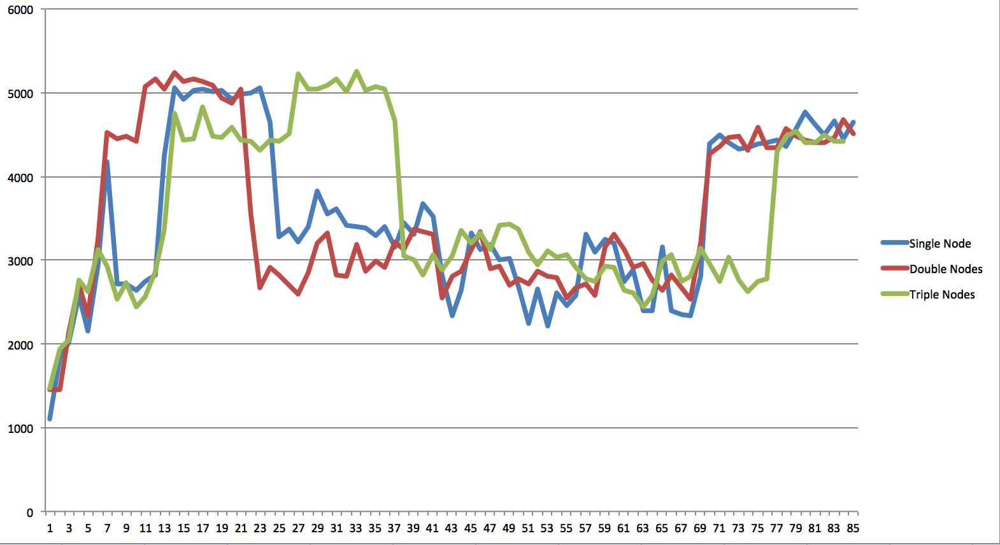
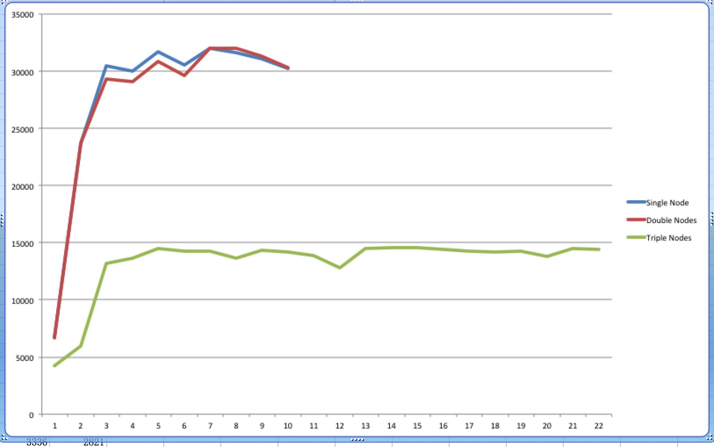
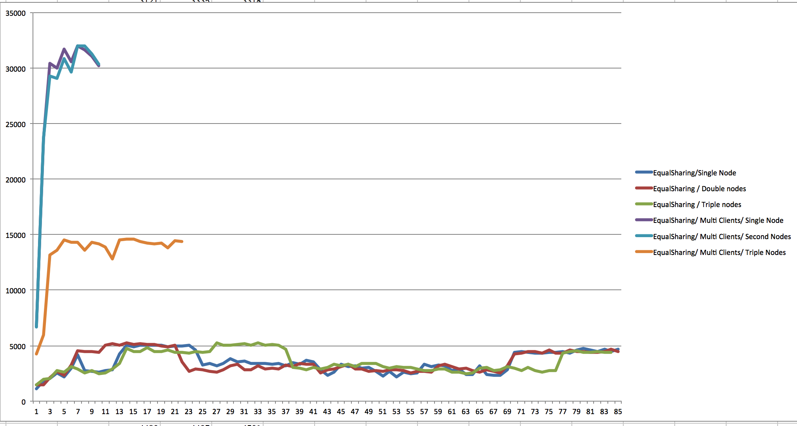

Checkpoint Report
Experiment Design
In this phrase, we had a basic design of our experiment. We decided what benchmark we use, what kind of trace files should produce and what kind of machines we can use.Firstly, we got permission on usage of LTI’s cluster. This cluster has four nodes. Each node has two, four core Xeon E5345 processor (2.33GHz, 8M L2 cache, no hyper-threading), 16GB memory and hard disk(15000RPM). Based on hardware of machines, we decided to use one node as Load-Balancer, in the meantime, every node was installed a distribution of Emeralddb.
The procedure of experiment is, each time, we implement a kind of schedule policy, and run this prolicy with two different trace files on 1, 2 and 3 nodes, respectively. For now Evaluation is based on how many times speedup acquired on numbers of operations per unit time. For instance, if 1 node has 100 op/sec and 4 nodes have 400op/s, we say 4x speedup is acquired. The detail of schedule policy, benckmark, traces will talk about later.
Schedule Policy
For now we come up with two policy:Equalsharing policy: The purpose of this policy, is to maintain theoretically balanced workload on each node. So for insert operation, it will be assgined to node which has least number of records. For other operations, like query and delete, will be transfered to node who has this record. This is a greedy policy, and require more memory and disk space for load balancer compared to Naivesharing policy, becasue this policy needs to maintain mapping between records and nodes, based on unique key of record. For now, in memory hashtable is used, but in real word, such important index should be saved in disk or ssd, along with log, to keep metadata integrity.
Equalsharing with multi-client policy: This policy is similar to Equalsharing policy, along with multi-client access to one instance of DB. So it tries to utilize multi-threading to improve performance. More specifically, this time, for every DB instance, we have more than one client to send requests to DB. These clients share a request queue.
Benchmark
The baseline is, performance of trace runs on single node. Expected performance of load balaner is, to gain linear speedup. As said before, speedup is based on comparing numbers of operations per unit time in different cases.Trace Files
We produce two different kinds of trace.- Single Insert trace: this trace consists of 300000 insert operation with random generated key.
- Mixd operations trace:this trace consists of 1000000 operation tuples. Each tuple is like (Insert, query, delete), and each tuple share the same key.
Current progress
EqualSharing Policy EqualSharing with multi-client policy 
Comparison of two policy 
Current observations
Based on experiment, we can tell that different policy has significant different performance. The main contribution of this is multi-threading. However, for each policy, multi nodes cannot help improve performance than single node. Even worse, in Equalsharing with multi-client policy, performance of multi nodes is worse than sinlge node.Issue with current progress
As said before, multi nodes cannot help improve performance than single node. We guess the reason maybe is multi-threading has queue and logger contention, because each thread has to write something into logger and catch requests from queue. Such contention results in serialization.Although we have some guess, we still cannot identify what is bottleneck of our load-balancer. So what is the reason we cannot achieve linear speedup? Such problems still need to be explored in the next two weeks.